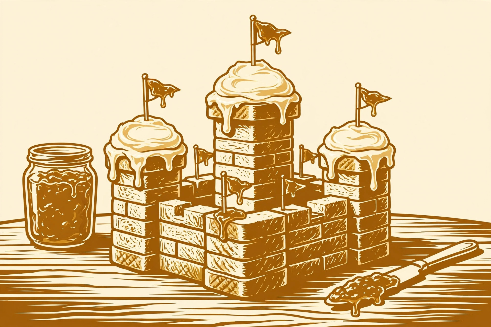

Toast Art: From Mona Lisa to Your Face →
The complete beginner's guide to absurd toast portraiture — canvases, gradients, and the toaster as a paintbrush.
Rigorous research into bread-based creative works

Most people treat toast as breakfast. We treat toast as a medium. This site documents the serious study of unserious things: portraiture in browned bread, municipal planning at the crumb scale, load-bearing carbohydrates, and the full calendar of seasonal toast. Every guide has been written in a completely deadpan tone, because that is the only tone that toast deserves.
Start with toast art →The complete beginner's guide to absurd toast portraiture — canvases, gradients, and the toaster as a paintbrush.
Urban planning at the bread scale: zoning, infrastructure, butter roads, and the political economy of a crumb metropolis.
Bears, owls, fish, and rabbits rendered in sliced bread — field notes from the world's least necessary zoo.
A mock-serious load-bearing analysis of stacked bread. No actual engineering was performed, which we want on the record.
Seasonal toast concepts for the full calendar year, plus a sincere note about making a joyful mess.
Tier engineering for a cake made entirely of toast: structure, which bread does what, a dated cost estimate, and the food-safety clock.
Plan your own toast mosaic: the three methods, the real 2,500 and 6,000-slice benchmarks, and an honest bread budget.
Three stations, a numbered build procedure, a topping comparison table, and the USDA two-hour food-safety clock.
Sweet and savoury toast judged on the same six criteria, with a comparison table and a four-question decision framework.
Four traditions compared: British beans, kaya with kopi and eggs, Australian Vegemite, and Nagoya ogura — origins, rituals and rules.
The famous overpriced toast, priced properly: dated Canadian grocery checks, three real Toronto cafe menus, and the annual arithmetic of the habit.
Browning with its numbers attached: the Maillard thresholds, the verified 2,000-slice perfect-toast study, and a dial procedure that ends at golden.
Sai do si, the cha chaan teng classic: peanut butter sealed inside, egg batter outside, condensed milk over all — name, fillings, rules and procedure.
Three documented ways to put fall apples on toast — the apple butter spread, the fried-apple stack, and the overnight baked French toast — compared, with a crispness procedure.
Christmas morning run as a host's procedure, not a recipe list: three stations, a night-before sequence, the two-hour food-safety clock, and the 2-1-1 balance rule.
The official storage clock meets five reheating methods in one table — how to freeze toast so it reheats crisp instead of sad.
The four-state sorting framework that routes every bread end to croutons, breadcrumbs, or pangrattato — no heel left behind.
The retrogradation science, the three doses of water, oven revival vs straight toasting — and the mould stop line where revival ends.
Dunking is a structural test: a dunk-survival ranking, the thickness rule, the acid-and-fat pairing science, and the fall soup bench.
Thick-sliced shokupan toasted crisp outside and soft inside, two café ways: butter and strawberry jam, and Nagoya ogura toast with anko — plus the…
Butter vs olive oil vs cheese-crusted garlic toast on the same bread at 400°F: the documented quantities, the softened-butter rule, garlic forms…
Cheese placement is structural: on the egg, on the buttered toast, or on both faces of the filling — three documented build orders compared, with the…